HR 系统操作手册
HR 系统用于统一管理职位、候选人、面试、评价、Offer及入职信息，帮助 HR 与业务负责人顺畅协作，让招聘进度清晰、操作规范、过程可追溯。本手册将按照实际招聘流程，说明系统功能、HR操作标准及业务协作要求。
完整招聘流程
招聘从 HR 与业务确认需求开始，由 HR、对应评估人和系统共同完成。主流程以完成入职为终点；人才沉淀与终止投递是在未继续当前投递时形成的侧向处理结果。
flowchart TB
A["HR + 业务｜确认招聘需求、岗位标准与评估方式"]
B["HR｜创建职位、负责人和招聘阶段"]
C["HR｜发布职位并维护外部来源映射"]
D["HR／系统｜接收简历、建立候选人与投递"]
E["HR｜完成初筛"]
F{"岗位规则｜是否需要作品评估"}
F1["HR｜发起并跟进作品评估任务"]
F2["对应评估人｜查看作品并提交评价"]
F3["HR｜接续处理作品评价结果"]
G{"岗位规则｜是否需要 AI 面试"}
G1["系统／HR｜发起并记录 AI 面试"]
G2["HR｜查看 AI 面试结果并决定是否推进"]
H["HR｜安排业务面试并指定面试官"]
H1["对应面试官｜面试前查看候选人"]
H2["对应面试官｜开展结构化面试"]
H3["对应面试官｜提交规范化面评"]
I["HR + 业务｜完成评价反馈与招聘交接"]
J["HR｜结合评价完成综合判断"]
K["HR｜发起 Offer 流程"]
L["HR｜维护待入职信息"]
M["HR｜确认完成入职"]
Z{"HR｜本次是否继续当前投递"}
T["HR｜人才沉淀"]
X["HR｜终止投递"]
A --> B --> C --> D --> E --> F
F -- "是" --> F1 --> F2 --> F3 --> G
F -- "否" --> G
G -- "是" --> G1 --> G2 --> H
G -- "否" --> H
H --> H1 --> H2 --> H3 --> I --> J
J -- "继续推进" --> K --> L --> M
E -. "初筛后不再继续" .-> Z
F2 -. "评价后不再继续" .-> Z
G2 -. "评估后不再继续" .-> Z
H3 -. "面评后不再继续" .-> Z
K -. "Offer阶段未继续" .-> Z
L -. "最终未入职" .-> Z
Z -- "优秀，值得保留机会" --> T
Z -- "无继续或保留计划" --> X
classDef hr fill:#f4f2ff,stroke:#6146ff,color:#241b57,stroke-width:1.5px;
classDef evaluator fill:#fff7ed,stroke:#d97706,color:#7c3d00,stroke-width:1.5px;
classDef system fill:#effcf9,stroke:#0f8f83,color:#075e57,stroke-width:1.5px;
classDef collaboration fill:#f5f3ff,stroke:#7c3aed,color:#4c1d95,stroke-width:2px;
classDef decision fill:#faf5ff,stroke:#8b5cf6,color:#4c1d95,stroke-width:1.5px;
classDef success fill:#ecfdf3,stroke:#18864b,color:#116333,stroke-width:2px;
classDef talent fill:#eff6ff,stroke:#2563eb,color:#1e3a8a,stroke-width:2px;
classDef terminate fill:#fff1f2,stroke:#be123c,color:#881337,stroke-width:1.5px;
class B,C,E,F1,F3,G2,H,J,K,L,Z hr;
class A,I collaboration;
class F,G decision;
class F2,H1,H2,H3 evaluator;
class D,G1 system;
class M success;
class T talent;
class X terminate;
- HR与业务确认招聘需求、岗位标准和评估方式，HR完成职位创建与发布。
- 接收简历并建立投递，由HR完成初筛。
- 按照岗位规则完成作品评估和AI面试；HR负责发起、跟进、查看结果和接续处理。
- HR安排面试，对应面试官查看候选人、开展结构化面试并提交规范化面评。
- HR与业务完成反馈交接，HR综合判断是否继续推进。
- 继续推进的候选人进入Offer、待入职并最终完成入职；未继续时由HR判断人才沉淀或终止投递。
招聘需求池
招聘需求池用于管理“为什么招、招多少、何时完成”这一层招聘目标，并与职位、招聘阶段及候选人进度联动。它不是候选人处理页面，而是HR启动招聘、判断HC余量、控制项目状态和完成收尾的项目入口。
- 招聘需求：招多少、何时完成记录部门、需求HC、目标完成日期和项目状态，观察招聘是否按目标推进。
- 职位与阶段：用什么流程招聘配置职位信息、招聘阶段及各阶段使用的评估方式，并决定职位是否对外接收投递。
- 候选人与投递：每个人走到哪里记录候选人在某个职位中的实际阶段、评价、Offer和最终结果。
- 已与业务确认招聘部门、职位名称、需求HC和目标完成日期。
- 已明确职位负责人以及后续阶段配置责任人。
- 职位负责人和HRBP可以创建、编辑、暂停、恢复、完成及归档招聘需求。
- HR和HR实习生不能操作招聘需求；有候选人协作权限也不等于拥有需求管理权限。

| 字段／按钮 | 分类 | 用途与判断规范 |
|---|---|---|
| 招聘中需求／总需求HC | 系统展示项 | 观察当前仍在推进的招聘项目数量和全部需求人数，不代表已经完成招聘。 |
| 已完成HC／已锁定HC | 系统展示项 | 已完成HC表示已实际到岗；已锁定HC表示已经占用招聘名额。两者共同影响仍需招聘HC。 |
| 待接受Offer | 系统展示项 | 候选人尚未确认接受的Offer数量，不计入已锁定HC，但会影响继续发Offer时的容量判断。 |
| 仍需招聘HC | 系统展示项 | 按“总需求HC－已完成HC－已锁定HC”计算，用于判断当前还需要补充多少实际招聘结果。 |
| 即将到期／已延期 | 系统展示项 | 结合目标完成日期提示进度风险；风险出现后需要判断是加速推进、调整目标，还是暂停或结束需求。 |
| 部门、职位、状态、负责人和日期筛选 | 可以填写 | 只用于缩小列表范围，不改变需求数据。可配合快捷筛选查看招聘中、待启动、暂停、待完成确认和已完成需求。 |
| 新建招聘需求 | 操作按钮 | 在招聘目标已确认后创建新的招聘需求，并同时生成一个职位草稿。 |
| 归档记录／查看详情 | 操作按钮 | 归档记录用于查看已经归档的项目；查看详情用于进入当前需求的HC、里程碑、漏斗和变更信息。 |
| 需求状态 | 如何进入 | 对应职位状态／动作 | HR下一动作 | 关键限制 |
|---|---|---|---|---|
| 待启动 | 创建需求与职位后自动进入 | 职位为草稿 | 进入“职位与阶段”配置招聘流程并准备发布。 | 尚未开始接收正式投递。 |
| 招聘中 | 完成职位配置并发布后进入 | 职位已发布并接收投递 | 跟进HC、时间风险和候选人推进。 | 发Offer前同时检查已锁定HC和待接受Offer。 |
| 暂停 | 职位负责人或HRBP确认暂停后进入 | 职位停止接收新投递 | 继续处理已有候选人，条件恢复后再恢复招聘。 | 禁止新投递和新Offer；风险与持续时间仍继续计算。职位页面出现“下架”提示时，以系统当前页面为准。 |
| 待完成确认 | 已完成HC达到需求HC后由系统显示 | 职位停止接收新投递 | 核对实际到岗、Offer占用和遗留候选人。 | 确认完成后不可恢复。 |
| 已完成 | HR核对数据并确认完成后进入 | 职位下架 | 处理Offer、锁定HC和全部进行中候选人。 | 未完成收尾前不能最终归档。 |
| 已归档 | 全部阻断项处理完并确认归档后进入 | 需求与职位永久只读 | 仅用于历史查询和经验回看。 | 归档后不可恢复编辑。 |

| 字段／按钮 | 分类 | 填写与操作规范 | 创建后的影响 |
|---|---|---|---|
| 部门 | 必须填写 | 选择本次招聘需求实际归属的部门。 | 决定需求归属，并影响后续职位和权限范围。 |
| 职位名称 | 必须填写 | 填写与业务确认后的正式职位名称，避免同一目标重复创建。 | 同步生成对应职位草稿。 |
| 工作地点 | 必须填写 | 选择候选人实际工作的地点。 | 成为职位基础信息的一部分。 |
| 职位负责人 | 必须填写 | 选择实际负责该职位招聘推进与结果跟进的人员。 | 用于明确后续推进责任；实际可见范围以职位协作配置为准。 |
| 需求HC | 必须填写 | 填写本次计划实际到岗的人数，不使用候选人数或面试人数替代。 | 成为HC进度和完成判断的基准。 |
| 目标完成日期 | 必须填写 | 填写与业务约定的招聘目标日期。 | 用于计算即将到期和已延期风险。 |
| 需求说明 | 可以填写 | 补充招聘原因、业务背景或交付要求，帮助后续人员理解项目。 | 作为需求详情和后续协作依据。 |
| 创建需求与职位 | 操作按钮 | 提交前再次核对部门、职位、HC、目标日期和负责人。 | 需求进入“待启动”，并生成“草稿”职位；尚未对外接收投递。 |
查看与编辑需求

| 模块／按钮 | 分类 | 用途与判断规范 |
|---|---|---|
| 查看职位与阶段 | 操作按钮 | 进入对应职位，继续配置阶段、发布职位或检查职位当前状态。 |
| HC进度与基础信息 | 系统展示项 | 核对HC、部门、负责人、目标日期和需求说明是否仍与实际招聘目标一致。 |
| 里程碑与招聘进展漏斗 | 系统展示项 | 回看项目节奏并识别候选人主要停留环节；漏斗数量不等同于最终HC。 |
| 变更记录 | 系统展示项 | 查看操作人、动作和字段变化，追溯需求调整原因。 |
招聘目标变化时再编辑需求，不使用编辑需求代替候选人阶段处理。
| 字段 | 分类 | 修改规范 |
|---|---|---|
| 需求HC | 必须填写 | 按最新确认的实际到岗目标调整，不得低于“已完成HC＋已锁定HC”。 |
| 目标完成日期 | 必须填写 | 只有业务目标或交付时间变化时调整，并同步相关责任人。 |
| 需求说明 | 可以填写 | 补充新的业务背景或交付要求，不删除仍有追溯价值的信息。 |
| 变更原因 | 必须填写 | 说明为什么调整以及由谁确认，供变更记录追溯。 |
- 确认暂停原因业务暂缓、招聘条件未确定或阶段性停止时再暂停；不要用暂停代替项目完成。
- 检查进行中候选人暂停会禁止新投递和新Offer，但已有候选人可以继续处理，已发Offer的结果仍需登记。
- 暂停后持续跟进暂停期间目标日期风险和持续耗时仍会继续计算，不能暂停后无人负责。
- 条件恢复后再恢复招聘确认HC、目标日期、负责人和职位配置仍然有效，再恢复对外接收投递。

| 字段／按钮 | 分类 | 用途与操作规范 |
|---|---|---|
| 操作原因 | 必须填写 | 说明暂停的真实业务背景，帮助后续人员判断何时可以恢复并追溯状态变化。 |
| 确认暂停 | 操作按钮 | 确认后需求进入暂停；不再接收新投递或发起新Offer，但已有候选人仍可继续处理。 |
| 暂停状态 | 系统展示项 | 操作后核对详情状态和操作按钮已经变化，暂停期间目标日期风险和持续时间仍继续计算。 |
| 恢复招聘／确认恢复 | 操作按钮 | 确认HC、负责人、目标日期和职位配置仍有效后恢复，使需求重新进入正常招聘流程。 |
- 确认招聘任务已经完成已完成HC达到需求HC后进入待完成确认；核对实际到岗数据无误再点击确认完成，完成后需求不可恢复。
- 按系统顺序清理归档阻断项先释放或处理待接受Offer与锁定HC，再处理全部进行中候选人，最后才能确认归档。
- 每位候选人只选择一种收尾方式无继续计划则终止投递；优秀且值得保留则进入人才库；适合其他岗位则转移需求（即转岗）。
- 确认归档全部阻断项清理完成后继续归档；归档后的需求与职位永久只读。
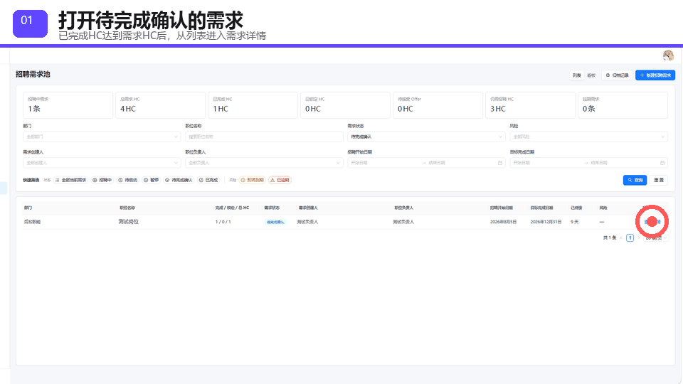
| 字段／按钮 | 分类 | 用途与操作规范 |
|---|---|---|
| 已完成HC／仍需招聘HC | 系统展示项 | 确认完成前核对实际到岗达到需求HC，且仍需招聘为0。 |
| 确认完成 | 操作按钮 | 只在招聘任务确已结束时使用；页面明确提示完成后需求不可恢复。 |
| 归档 | 操作按钮 | 进入三步收尾流程：释放Offer与锁定HC、处理进行中候选人、确认归档。 |
| 待接受Offer／已锁定HC | 系统展示项 | 归档前必须按页面提示处理完毕，不得只处理候选人列表。 |
| 终止投递／进入人才库／转移需求 | 操作按钮 | 对每位候选人三选一：无继续计划则终止，优秀且值得保留则入库，适合其他岗位则转移需求（即转岗）。转移后候选人在新需求继续推进。 |
| 已归档 | 系统展示项 | 全部阻断项处理完成并确认归档后，需求与职位永久只读。 |
异常处理与完成标准
- 同一部门、同一职位已经存在有效需求：先核对是否重复创建。
- HC调低被阻止：检查新HC是否低于已完成HC与已锁定HC之和。
- 归档被阻止：按“Offer与锁定HC—进行中候选人—确认归档”的顺序检查。
- 只能查看不能编辑：说明当前账号没有需求管理权限，联系管理员确认权限，不要绕过系统处理。
招聘启动
招聘启动不是单纯创建一条职位记录。负责人或HRBP需要先取得业务确认，再建立招聘需求和职位草稿，配置实际招聘流程、简历来源映射及协作权限，最后发布职位并核对需求状态。职位与招聘需求均显示“招聘中”后，项目才算正式启动。
- 确认招聘目标与业务确认招聘部门、职位名称、需求HC、目标完成日期和岗位优先级。
- 确认岗位与评价标准明确核心能力、不能接受的风险，以及简历筛选、作品评估、AI面试和人工面试的使用范围。
- 确认流程与责任人确定招聘阶段顺序、职位负责人、对应评估人和面试官；有一名或多名HR参与均可启动。
- 确认协作范围需要其他HR共同处理该职位时，将实际参与人员加入协作权限；不为无关人员扩大职位和候选人可见范围。
| 字段／按钮 | 分类 | HR操作规范 | 完成后的影响 |
|---|---|---|---|
| 部门、职位名称、需求HC、目标完成日期、职位负责人 | 必须填写 | 使用已经与业务确认的真实目标；HC填写计划实际到岗人数，负责人填写实际承担招聘结果的人。 | 成为项目归属、HC进度、时间风险和责任划分的基础。 |
| 需求说明 | 可以填写 | 补充招聘原因、业务背景或特殊交付要求，保留后续追溯需要的信息。 | 帮助协作人员理解本次招聘目标。 |
| 创建需求与职位 | 操作按钮 | 仅由职位负责人或HRBP操作；提交前再次核对业务确认内容。 | 生成待启动需求和职位草稿，尚未接收正式投递。 |
| 待启动／草稿 | 系统展示项 | 用于确认对象已经建立，但仍需完成职位配置与发布。 | 不能把该状态视为正式启动招聘。 |

| 字段／按钮 | 分类 | HR操作规范 | 对后续招聘的影响 |
|---|---|---|---|
| 简历评估官百炼应用ID | 按需配置 | 岗位使用自动简历评估时填写已发布的应用ID；不使用时不填。 | 决定系统是否为进入该职位的简历生成辅助评估。 |
| 简历筛选、Offer、待入职 | 系统展示项 | 三个固定阶段构成职位基础流程；中间阶段必须与业务确认的真实招聘方式一致。 | 所有候选人均在该流程骨架中推进。 |
| AI面试／作品集筛选／人工面试 | 按岗位必配 | 至少新增一个实际使用的中间阶段，不为展示完整而默认添加全部三类；发布前核对阶段名称和顺序。 | 决定候选人从简历筛选到Offer之间经历的环节。 |
| AI面试官ID、AI面试评估ID | 条件必填 | 仅在新增AI面试阶段时填写；两个应用均显示“已就绪”后才算配置成功。 | 配置错误会导致AI面试无法正常发起或生成评价。 |
| BOSS职位名称映射 | 按需配置 | 需要自动接收BOSS简历时配置；BOSS名称与系统一致可添加当前职位名称，不一致时新增真实名称映射，同时确保招聘邮箱已正确绑定启用。 | 决定BOSS邮件简历能否自动识别并进入正确职位。 |
| 职位协作人 | 按实际配置 | 一人负责可以不额外添加；多人协作时添加所有实际参与HR并保存授权，不添加无关人员。 | 只有负责人、创建人及已授权协作人可以查看对应职位数据。 |
| 发布职位 | 操作按钮 | 发布前必须取得业务负责人确认，并完成阶段、ID、映射和权限复核。 | 职位进入招聘中，对应招聘需求同步进入招聘中，招聘项目正式启动。 |
按需操作：暂停与恢复招聘
暂停和恢复不是每个招聘项目的必经步骤。招聘目标、HC或业务条件暂时变化时，由职位负责人或HRBP根据已确认的决定维护需求状态。
| 字段／按钮 | 分类 | HR操作规范 |
|---|---|---|
| 暂停原因 | 必须填写 | 记录真实业务原因，便于协作人员理解项目为何停止接收新投递和新Offer。 |
| 暂停招聘 | 操作按钮 | 由负责人或HRBP在业务条件暂时不支持继续招聘时使用；已有候选人仍需明确处理和反馈。 |
| 恢复招聘 | 操作按钮 | 确认HC、时间和业务条件已经恢复后使用，不能仅为消除暂停状态而恢复。 |
| 暂停／招聘中 | 系统展示项 | 操作后核对需求与职位状态一致，并同步相关协作人员。 |
候选人接收与建档
HR通过招聘邮箱、猎头或手动录入接收候选人，并确保候选人信息和本次投递准确建立。
- 确认接收渠道根据实际来源处理邮箱简历、猎头推荐或手动录入。
- 核对候选人信息检查姓名、手机号、邮箱和简历识别结果，避免错误或重复记录。
- 确认职位和来源选择候选人本次实际应聘岗位及真实来源渠道。
- 建立本次投递创建后确认候选人已经进入正确职位和招聘阶段。
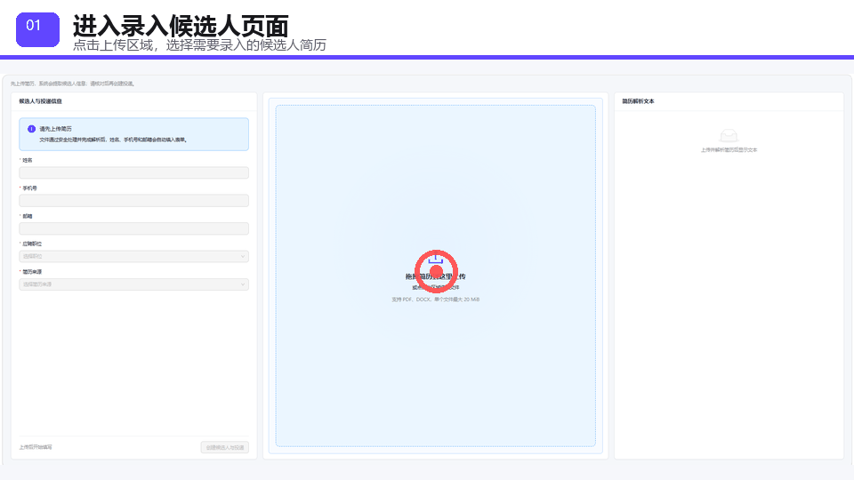
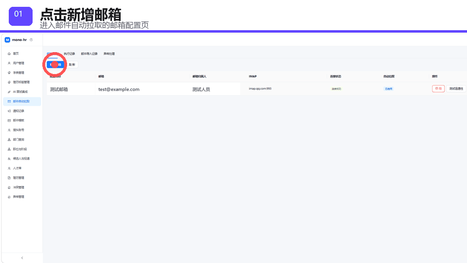
简历筛选
HR结合岗位标准和简历事实完成初筛，AI简历评估只作为辅助信息，不能替代HR判断。
- 阅读简历与评估结果先核对简历事实，再参考系统提供的辅助评价。
- 按照岗位标准判断判断是否继续推进，不以与岗位无关的信息作为筛选依据。
- 形成明确结论继续推进、终止投递或等待必要信息，不能长期停留在待筛选状态。
- 更新候选人状态确保系统阶段与HR实际判断一致，并明确下一动作。

面试前评估（按岗位配置）
设置作品评估或AI面试的岗位，由HR负责发起、通知、跟进和结果接续，对应评估人负责专业评价。
- 核对作品材料确认作品文件或链接与本次岗位评估相关。
- 邀请对应评估人选择正确评估人并发送钉钉通知。
- 跟进评价结果评价完成后查看结论，再决定是否进入下一阶段。
- 安排AI面试确认当前候选人和岗位无误后发起邀请。
- 核对通知与状态确认邀请已经发送，并跟进候选人完成情况。
- 查看评估结果结合评估结果和招聘标准决定后续动作。
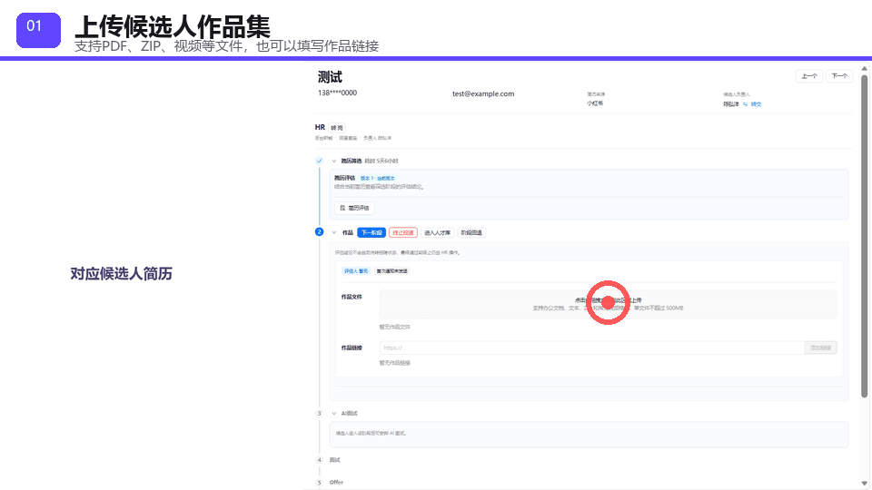

业务面试
HR负责安排面试、核对通知、跟进面评和候选人反馈；业务负责人负责专业面试和规范化评价。
- 准确安排面试核对面试官、日期、时间、标题和会议资料。
- 确认双方收到通知确认业务收到钉钉日程，候选人收到包含关键安排的邮件。
- 跟进规范化面评面试结束后及时提醒业务提交基于事实和岗位标准的评价。
- 向候选人反馈7个工作日内提供明确结果或进度反馈，不因内部沟通长期不回复。
- 更新招聘状态反馈形成后同步维护系统状态和下一动作。

招聘结果处理
本次招聘判断形成后，HR将候选人归入Offer、进入人才库或终止投递，避免候选人长期停留在招聘中。
- Offer决定录用并继续进入Offer及入职跟进。
- 终止投递本次不再继续，且没有明确的人才保留计划。
- 进入人才库本次无法继续，但候选人优秀且具有明确的后续匹配价值。
- 依据评价事实和岗位标准作出判断。
- 向候选人提供准确、尊重且一致的反馈。
- 同步更新系统结果和后续责任人。
- 人才沉淀需要记录优势、适合方向和跟进建议。
- 确认Offer结果候选人接受后登记预计入职日期并进入待入职跟进。
- 维护待入职信息跟进入职准备和候选人变化，确保系统信息准确。
- 处理未入职情况拒绝、毁约或HC变化时，重新判断终止投递或人才沉淀。
- 确认完成入职候选人实际入职后完成最终状态维护。
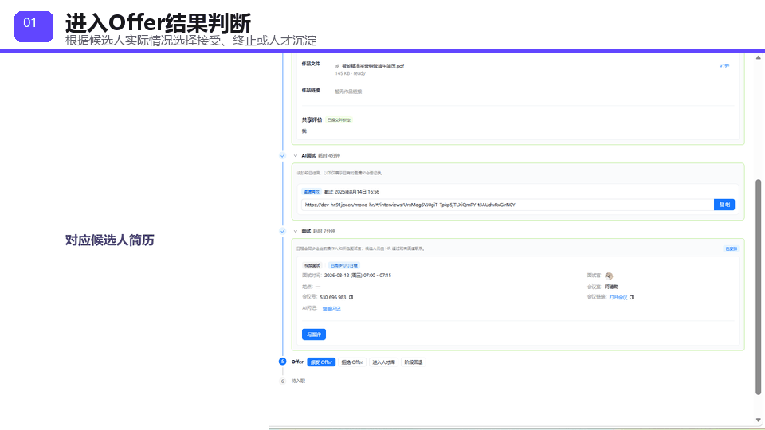
| 字段／按钮 | 分类 | 用途与操作规范 |
|---|---|---|
| 预计入职日期 | 必须填写 | 填写与候选人确认后的预计入职时间，用于进入待入职并持续跟进。 |
| 接受Offer | 操作按钮 | 确认候选人已经接受Offer后使用，使候选人进入待入职状态。 |
| 待入职状态／预计入职日期／实际结果 | 系统展示项 | 持续核对系统状态与实际进展；出现拒绝、毁约或HC变化时及时形成新的结果处理。 |
- Offer待确认 → 待入职候选人接受Offer并填写预计入职日期后，进入待入职跟进。
- 待入职 → 完成入职候选人实际入职后完成最终状态维护。
- 待入职 → 其他结果处理候选人拒绝、毁约或HC变化时，根据实际判断终止投递或进入人才库，不遗留无人跟进的待入职记录。
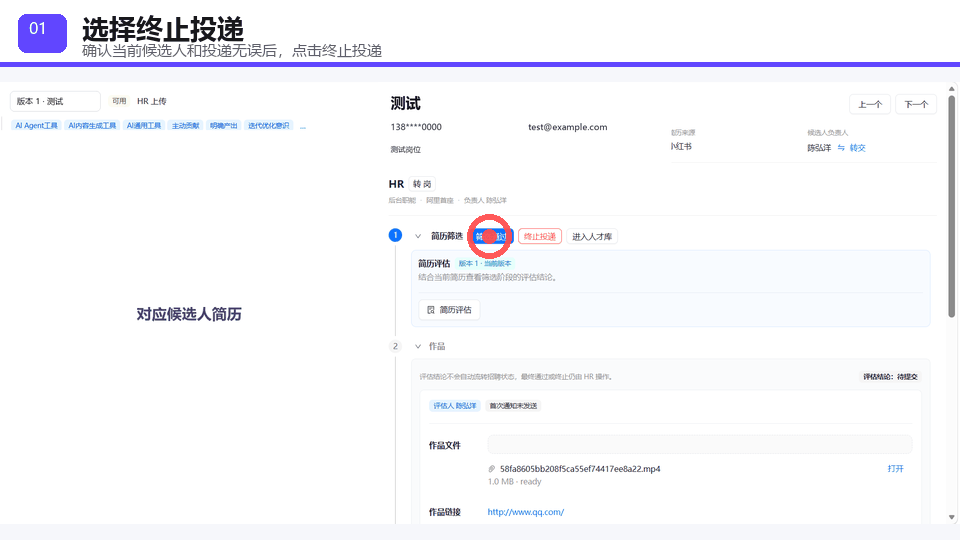
| 字段／按钮 | 分类 | 用途与操作规范 |
|---|---|---|
| 标准原因 | 必须填写 | 选择与本次实际判断一致的终止原因，作为招聘结果记录和后续查询依据。 |
| 确认终止 | 操作按钮 | 确认后当前投递立即终止，系统将在5小时后自动发送终止反馈邮件。 |
| 已终止／终止原因 | 系统展示项 | 操作完成后核对页面状态和原因是否与实际处理一致。 |
| 恢复投递 | 操作按钮 | 用于撤销误操作，并取消五小时后的终止反馈邮件发送；只在确认终止有误时使用。 |
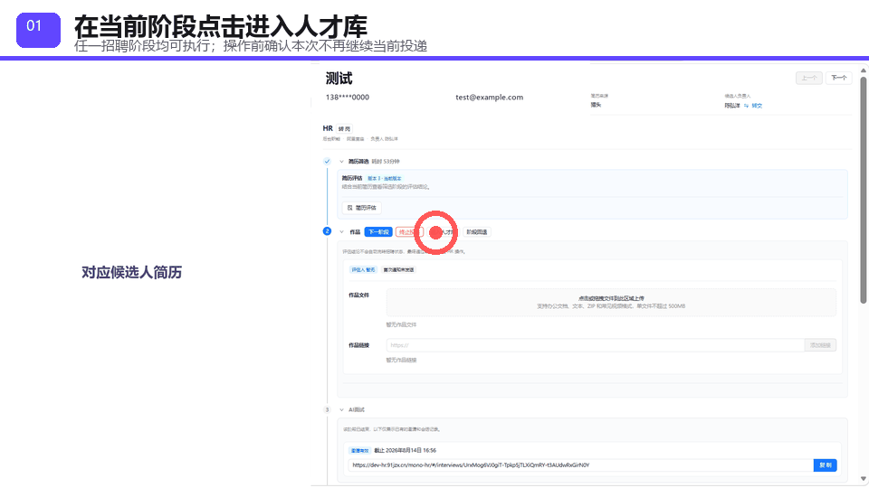
招聘项目收尾与人才沉淀
招聘目标完成、HC已满或业务确认结束项目时，先处理当前需求中的Offer占用和全部进行中候选人，再由职位负责人或HRBP确认完成并归档。归档不是简单关闭页面，而是确认这个招聘项目已经没有遗留责任。
- 核对HC与Offer占用确认实际完成HC、锁定HC和待处理Offer与项目结果一致，不带着未判断的Offer进入归档。
- 检查全部进行中候选人逐一核对当前状态、处理时间、负责人和下一动作，不能遗留无人跟进的招聘中记录。
- 处理当前需求中的候选人候选人继续其他岗位时转岗；本次不再合作时终止投递；优秀但当前无法继续时进入人才库。
- 核对反馈与记录确认候选人评价、结果原因和需要触发的反馈均已记录，系统状态与实际沟通一致。
- 确认完成并归档所有阻断项清理完成后，由职位负责人或HRBP完成归档。
| 字段／按钮 | 分类 | HR操作规范 | 结果 |
|---|---|---|---|
| 已完成HC、已锁定HC、待处理Offer | 系统展示项 | 确认数量与实际招聘结果一致；有未处理占用时先解决，不直接归档。 | 用于判断项目是否具备完成条件。 |
| 确认完成 | 操作按钮 | 由职位负责人或HRBP在招聘目标已经结束且数据核对无误后操作；确认后不可恢复招聘。 | 需求进入已完成，职位停止继续招聘。 |
| 转岗／终止投递／进入人才库 | 候选人处理 | 根据候选人的真实后续选择一个分支处理，不对同一投递依次执行。转岗表示候选人在新岗位继续新的招聘流程。 | 清除当前需求中的进行中候选人阻断项。 |
| 归档 | 操作按钮 | 仅在Offer占用和进行中候选人全部处理完后，由职位负责人或HRBP确认。 | 需求与职位进入已归档并永久只读。 |
| 已归档 | 系统展示项 | 操作后核对项目已进入历史查询状态，不再存在待处理责任。 | 作为本次招聘项目正式闭环的标志。 |
通知核对与候选人反馈
系统通知不能替代HR跟进。HR需要在关键动作后核对通知结果，并确保候选人和对应评估人及时获得准确、尊重且一致的信息。
- 作品评估任务是否发送给正确的评估人。
- AI面试和视频面试通知是否发送给候选人及相关面试官。
- 终止投递、进入人才库和人才回捞通知是否与实际处理结果一致。
- 通知记录异常时，先确认招聘动作是否成功，再决定后续补救方式。
- 系统显示已发送不等于候选人已经理解，重要节点仍需HR确认沟通结果。
- 暂无最终结论时，应提供真实的进度反馈，不让候选人长期等待且无人跟进。
- 对外口径必须与系统状态一致；状态或结果变化后及时更新记录。
- 业务面评未提交时，由HR及时提醒并持续跟进，不将内部协作延迟转嫁给候选人。
面试前准备
业务负责人通过钉钉通知一键进入对应候选人页面，在正式面试前完成信息了解；设置作品评估环节的岗位，还需先完成作品评价。
- 面试会议通知：点击候选人链接以钉钉日程页面为准，在“描述”区域点击候选人页面链接，进入投递详情查看简历、岗位和相关经历；此入口只用于面试前了解情况。
- 作品集评估通知（可选）：点击“查看任务”以钉钉工作通知卡片为准。仅在本人收到作品评估任务时点击“查看任务”，进入作品阶段查看材料并完成作品评价。
- 形成面试准备围绕岗位要求整理需要验证的经历、能力和风险点，避免临时翻阅材料或重复询问简历已有信息。
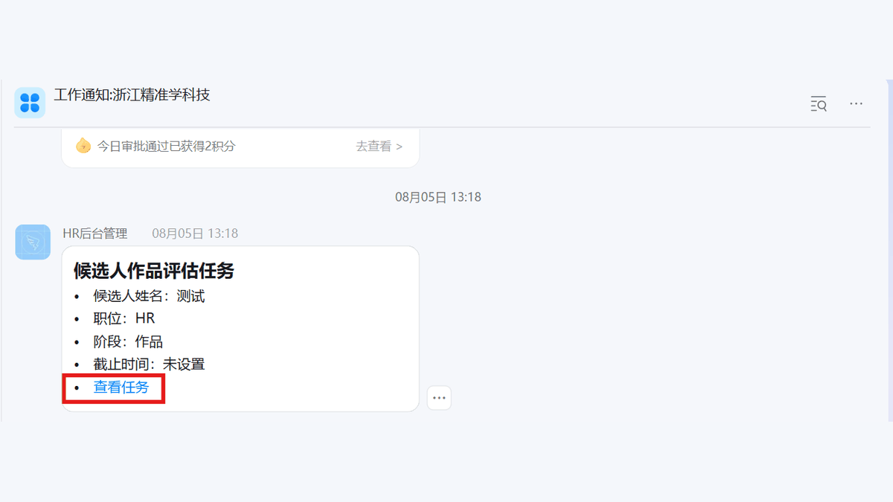
可选分支：作品集评估
面试前完成查看候选人
进入候选人页面后，先确认人员和投递记录无误，再阅读与本轮面试有关的信息。业务负责人以了解情况为主，不负责调整招聘阶段。
- 确认候选人与岗位核对姓名、应聘职位和当前招聘阶段，避免查看或评价错误的投递记录。
- 阅读简历与相关材料重点了解与岗位相关的经历、项目、成果和需要进一步验证的信息。
- 整理面试问题从简历事实出发准备追问，不预设结论，不以与岗位无关的个人信息作为判断依据。
结构化面试
业务负责人围绕岗位标准开展结构化面试，用一致、清晰、尊重的方式验证候选人的真实经历与能力，同时保障良好的候选人体验。
- 清晰开场准时参会，完成自我介绍，说明本轮面试的目标和大致安排，让候选人知道接下来会发生什么。
- 围绕事实追问结合岗位要求询问候选人做过什么、承担什么角色、如何行动、产生什么结果，并通过追问确认其实际贡献。
- 按统一标准判断对同一岗位使用相对一致的核心问题和判断维度，区分“候选人表达”与“已经验证的事实”。
- 留出候选人提问时间如实回答岗位和团队相关问题；不确定的信息不随意承诺，面试后可交由 HR 补充。
- 规范收尾感谢候选人参与，不在现场随意承诺录用结果、薪资或后续时间，由 HR 统一跟进。
提交评价
面试结束后及时进入候选人页面撰写面评。评价必须能够让未参加面试的 HR 看懂判断依据，并支持后续决策与沟通。
- 事实记录记录候选人的关键回答、经历和可验证结果，避免只写“感觉不错”“沟通一般”等模糊印象。
- 岗位匹配判断逐项说明哪些能力符合岗位要求、证据是什么，区分已经验证与尚未验证的内容。
- 优势与风险写明值得继续关注的优势、可能影响胜任的风险及建议在下一轮补充验证的问题。
- 明确结论给出清晰建议，并确保结论与前述事实、能力判断和风险分析一致。

| 评价部分 | 分类 | 应该写什么 | 避免写什么 | 完成标准 | 系统字段 |
|---|---|---|---|---|---|
| 事实依据 | 必须填写 | 具体回答、行为、职责和结果 | 仅写主观感觉 | 他人能够理解判断从何而来 | 面试评价 |
| 能力判断 | 必须填写 | 与岗位要求对应的匹配情况 | 与岗位无关的个人评价 | 判断与证据一一对应 | 面试评价 |
| 风险与待验证项 | 必须填写 | 风险表现、影响及后续验证建议 | 没有事实依据的标签 | HR 或下一轮面试官可直接继续验证 | 面试评价 |
| 面试结论 | 必须填写 | 明确的推进建议 | 模糊、矛盾或无结论 | 结论与正文判断保持一致 | 面试结论 |
反馈与交接
业务负责人完成评价后，将判断和必要信息完整交给 HR；HR 负责招聘阶段和候选人后续沟通，双方共同保障流程顺畅与候选人体验。
- 在约定时间内完成作品评价或面试评价，不让后续流程因反馈缺失而停滞。
- 评价内容有事实、有岗位判断、有风险说明、有明确结论。
- 出现迟到、缺席、时间冲突、沟通异常或需要补充验证的情况，及时同步 HR。
- 对候选人提出但现场无法确认的问题，记录并交由 HR 后续回复。
- 结合评价决定后续招聘流程并完成系统操作。
- 负责候选人阶段推进、回退、终止及后续通知。
- 协调下一轮面试或补充沟通，并向相关人员同步必要信息。
- 具体时效与异常升级规则待内部规范确认。
招聘结果建议与职责边界
业务负责人提供客观评价和岗位建议，不直接操作招聘阶段或人才沉淀。
- 说明是否建议继续当前岗位流程，并写出事实依据。
- 不适合当前岗位但表现优秀时，可提出“适合其他方向”或“建议保留后续机会”。
- 继续推进、终止投递或人才沉淀的最终判断及系统操作由 HR 完成。
- 不向候选人自行承诺录用结果、人才库安排或联系时间。
AI 面试集成
AI面试集成用于准备三类百炼应用、维护阿里云ICE登录凭证，并将对应应用ID绑定到职位或AI面试阶段。该板块属于低频配置工作，由获得阿里云及HR系统权限的人员完成；普通招聘使用者无需重复创建。
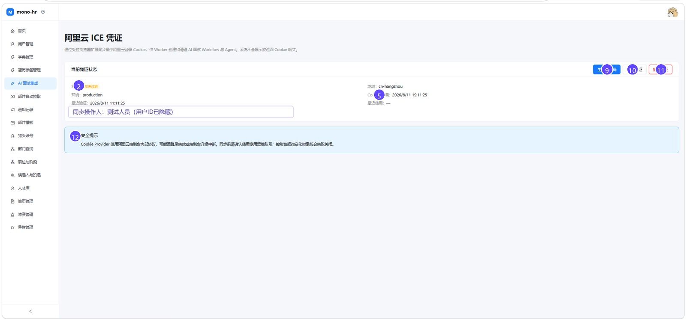
| 截图编号 | 关键内容 | 分类 | 什么时候使用 | 判断与操作规范 |
|---|---|---|---|---|
| ①＋② | 凭证状态、Cookie到期 | 系统展示项 | 创建、同步或排查AI能力前 | 先确认状态有效且未到期；即将过期或不可用时，不继续依赖当前凭证。 |
| ③ | 生成同步码 | 操作按钮 | 首次同步或重新同步凭证时 | 同步码是一次性敏感信息，只用于受控浏览器扩展，不截图、不转发、不长期保存。 |
| ④ | 重新验证 | 操作按钮 | 凭证即将过期、登录失效或调用异常时 | 用于检查当前凭证是否有效，不等同于同步一份新凭证。 |
| ⑤ | 撤销凭证 | 操作按钮 | 账号切换、凭证风险或明确停止集成时 | 属于高影响操作；执行前确认没有正在运行的相关任务。 |
| ⑥ | 安全提示 | 系统展示项 | 每次同步前 | 使用指定账号与受控扩展；控制台契约变化或登录异常时应停止并排查。 |
-
阿里百炼：准备AI能力 创建AI面试官、AI面试评估官和AI简历评估官，配置提示词、模型并完成模拟测试与发布。
-
阿里云ICE：提供系统调用凭证 通过受控浏览器扩展同步最小登录Cookie，供Worker创建和清理AI面试Workflow与Agent。
-
HR系统：绑定岗位并运行 将三个百炼应用ID填写到正确位置；职位与阶段只负责启用，不重复创建百炼应用。
- 联系陈灵琪申请阿里云账号及操作授权
- 取得当前岗位已确认的统一提示词模板
- 确认应用名称采用“岗位＋具体功能”
- 向管理员获取凭证同步浏览器扩展
- 确认使用指定阿里云账号及正确环境
- 同步码、Cookie及真实应用ID禁止对外展示
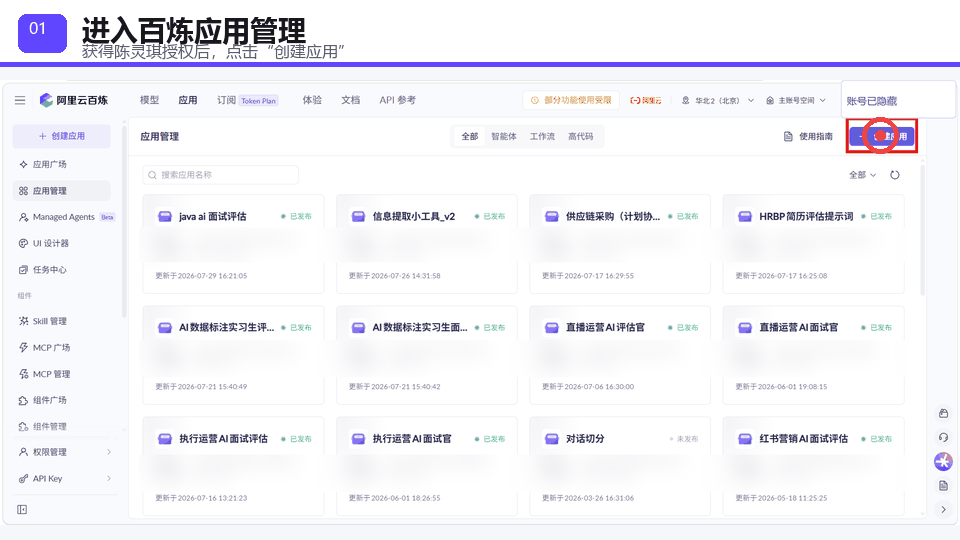
| 百炼应用 | 分类 | 负责能力 | HR系统填写位置 | 填写错误的影响 | 操作规范 |
|---|---|---|---|---|---|
| AI简历评估官应用ID | 必须填写 | 读取简历并形成初步评估 | 职位AI配置中的简历评估应用ID | 可能无法生成正确的简历评估结果 | 结果至少明确收敛为“通过／不通过／待定”；本手册不展开严格评分教学。 |
| AI面试官应用ID | 必须填写 | 与候选人对话、提问和追问 | AI面试招聘阶段中的AI面试应用ID | 候选人可能进入错误的面试智能体 | 必须使用对应岗位的面试官应用ID。 |
| AI面试评估官应用ID | 必须填写 | 分析AI面试记录并形成内部评价 | AI面试招聘阶段中的AI面试评估应用ID | 可能无法生成正确评价或评价口径错位 | 不得与AI面试官应用ID互换。 |
-
创建智能体应用 进入阿里百炼“应用管理”，点击“创建应用”，选择智能体应用并按“岗位＋具体功能”命名。
-
配置统一提示词 粘贴对应的面试官、面试评估官或简历评估官模板，只替换标记为可配置的岗位内容。
-
选择模型并关闭思考模式 选择当前确认适用的模型，在参数设置中关闭
enable_thinking，避免响应等待过长影响候选人体验。 -
完成模拟测试 在右侧测试界面检查回答是否自然、追问是否有效、输出是否符合模板且不泄露内部规则。
-
发布并记录应用ID 测试无误后发布应用，返回应用管理复制应用ID，并记录其岗位和具体功能。
- 百炼应用待配置 → 测试通过并发布发布后取得对应应用ID，分别用于AI面试官、AI面试评估官和AI简历评估官。
- ICE凭证未同步／失效 → 同步并验证有效只有凭证可用时，HR系统才能继续调用相关阿里云能力。
- 应用ID未绑定 → 填写到正确岗位用途绑定完成后才进入岗位侧使用；具体填写位置和发布检查见“职位与阶段”。
邮件自动拉取
邮件自动拉取用于把招聘邮箱接入HR系统。HR实习生、HR、HRBP及管理员均可绑定本人使用的招聘邮箱；配置启用后，系统每5分钟自动拉取一次邮件。无法自动导入的邮件进入“异常处理”，由对应邮箱的HR继续处理。
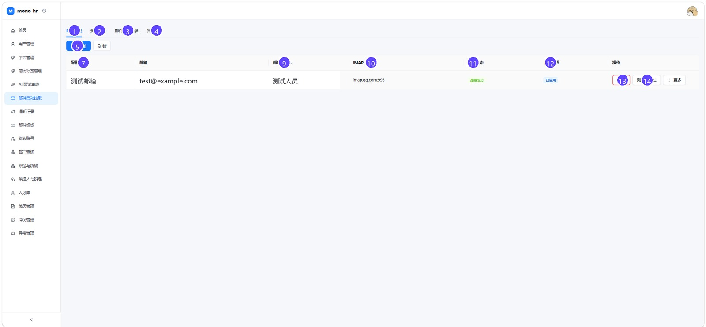
| 截图编号 | 关键内容 | 分类 | 什么时候使用 | 判断与操作规范 |
|---|---|---|---|---|
| ①–④ | 邮箱配置、执行记录、导入记录、异常处理 | 操作按钮 | 配置邮箱或排查邮件去向时 | 先看邮箱是否启用；未扫描看执行记录，已扫描看导入记录，无法自动导入进入异常处理。 |
| ⑤ | 新增邮箱 | 操作按钮 | 首次接入本人负责的招聘邮箱时 | 填写前准备邮箱平台生成的IMAP授权码，并核对邮箱服务商。 |
| ⑦＋⑨ | 配置名称、邮箱归属人 | 必须填写 | 新增邮箱时 | 配置名称填写本人钉钉姓名，归属人选择本人账号，用于明确后续异常责任。 |
| ⑩ | IMAP服务地址与端口 | 必须填写 | 新增或排查连接时 | QQ填写imap.qq.com，网易填写imap.163.com，端口保持993。 |
| ⑪＋⑫ | 连接状态、自动拉取状态 | 系统展示项 | 测试或启用后 | 连接成功后才能启用；显示已启用后，系统每5分钟自动拉取。 |
| ⑬＋⑭ | 启用／停用、测试连通性 | 操作按钮 | 保存配置后、正式运行前 | 测试连通性会拉取历史简历；确认连接成功后再启用，停用会中止后续自动拉取。 |
- 确认绑定的是本人实际负责的招聘邮箱。
- QQ邮箱在“账号与安全”页面生成授权码；网易邮箱在POP3/SMTP/IMAP设置中新增授权密码。
- 授权码或授权密码只粘贴到HR系统的“IMAP授权码”，不得在手册、聊天或截图中公开。
- 测试连通性会开始拉取历史简历，操作前先确认邮箱地址、Host和授权码填写正确。
- 系统每5分钟自动拉取一次邮件，无需HR手动重复触发。
- HR实习生、HR、HRBP和管理员均可绑定邮箱及处理异常。
- 对应邮箱的HR负责核对导入结果和处理该邮箱产生的异常。
- 无法判断异常原因或处理方式时，停止操作并联系管理员。

| 字段 | 分类 | 填写内容 | QQ邮箱 | 网易邮箱 | 操作规范 |
|---|---|---|---|---|---|
| 配置名称 | 必须填写 | 填写本人钉钉姓名 | 同一规则 | 便于识别该配置的实际负责人。 | |
| 邮箱地址 | 必须填写 | 填写本人实际使用的完整邮箱地址 | 本人QQ邮箱 | 本人网易邮箱 | 确认邮箱属于本人负责的招聘邮箱。 |
| IMAP Host | 必须填写 | 根据邮箱服务商填写 |
imap.qq.com
|
imap.163.com
|
不要混用不同服务商的Host。 |
| 端口 | 必须填写 |
993
|
保持系统默认值 | 不要修改。 | |
| 用户名 | 必须填写 | 填写完整邮箱地址 | 本人QQ邮箱地址 | 本人网易邮箱地址 | 与“邮箱地址”保持一致。 |
| IMAP授权码 | 必须填写 | 粘贴邮箱平台生成的授权凭证 | 生成授权码 | 新增授权密码 | 不是邮箱登录密码；禁止对外展示。 |
| 邮箱归属人 | 可以填写 | 选择对应的本人账号 | 同一规则 | 用于明确后续异常处理责任。 | |
- 未配置 → 保存邮箱配置系统记录本人邮箱、IMAP服务和归属人，但尚不能据此判断连接一定可用。
- 待验证 → 测试连通性成功测试会开始拉取历史简历；连接失败时先核对邮箱、Host和授权码。
- 未启用 → 已启用系统开始每5分钟自动拉取；停用后将不再继续自动拉取该邮箱。
- 邮件＋职位名称映射成功 → 建立候选人与投递系统根据“职位与阶段”中的真实名称映射把简历导入对应职位；导入后到“候选人与投递”核对人员、岗位和来源。
- 邮件无法自动导入 → 进入异常处理由对应邮箱HR接续处理，无法判断时联系管理员。
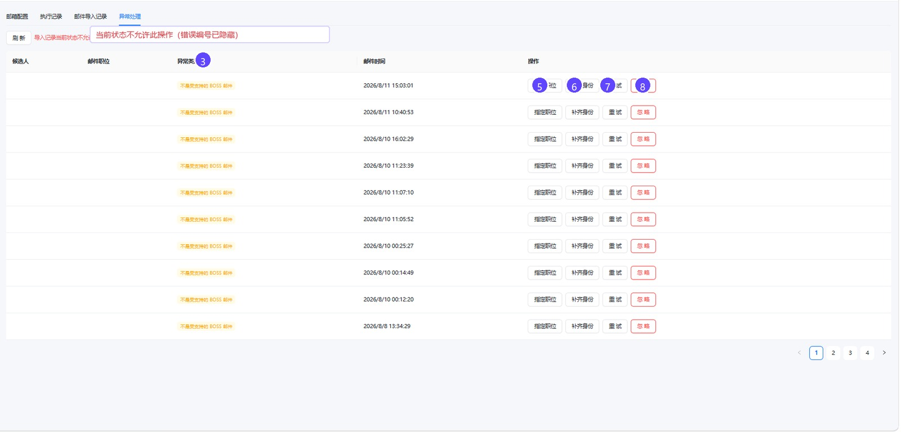
| 截图编号 | 关键内容 | 分类 | 处理要求 |
|---|---|---|---|
| ③ | 异常类别 | 系统展示项 | 先确认系统为什么没有自动导入，再选择对应处理入口。 |
| ⑤＋⑥ | 指定职位、补齐身份 | 操作按钮 | 只依据实际邮件补充；具体提交影响以打开后的页面为准。 |
| ⑦ | 重试 | 操作按钮 | 补齐必要信息后再重试；页面提示当前状态不允许操作时，不要重复点击。 |
| ⑧ | 忽略 | 操作按钮 | 影响尚未核验，无法判断是否应忽略时必须联系管理员。 |
通知记录
通知记录用于查询系统发送邮件和钉钉通知的结果。该页面以查看和核对为主，不承担安排面试、推进候选人或重新发送通知等业务操作。
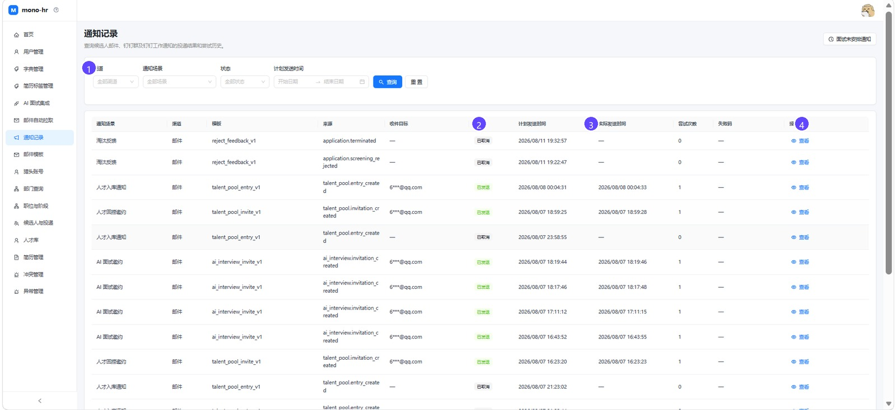
| 截图编号 | 关键内容 | 分类 | 查看要点 |
|---|---|---|---|
| ① | 渠道、通知场景、状态和时间筛选 | 可以填写 | 条件均为查询条件，不会修改通知记录；优先按通知场景和状态缩小范围。 |
| ② | 状态 | 系统展示项 | 用于确认记录当前显示为已发送、已取消或其他页面状态。 |
| ③ | 计划发送时间、实际发送时间、尝试次数和失败码 | 系统展示项 | 实际发送时间存在时可核对发送时点；未发送时结合状态、尝试次数和失败码查看。 |
| ④ | 查看 | 操作按钮 | 打开当前通知记录的详情，只用于继续核对，不改变招聘流程。 |
- 安排AI面试
- 安排视频面试
- 终止投递
- 进入人才库
- 人才库回捞邀请
- 安排面试相关通知
- 邀请业务评估作品集
- 系统内已配置的相关提醒
| 核对结果 | 判断 | 下一动作 |
|---|---|---|
| 没有找到记录 | 原招聘动作可能尚未保存成功，或通知记录尚未生成。 | 先回到原业务页面核对候选人状态和操作结果；状态已改变但仍无记录时联系管理员，不要重复执行高影响动作。 |
| 等待发送／未到计划时间 | 通知可能仍在计划队列中；终止投递和进入人才库存在5小时延迟。 | 核对计划发送时间，未超过发送时点时等待系统执行。 |
| 已发送 | 系统已经完成渠道发送。 | 核对收件目标和实际发送时间；重要节点仍由HR继续确认沟通结果。 |
| 已取消 | 计划通知已经取消，不会按原计划发送。 | 回到原业务记录核对是否发生恢复投递或其他状态修正，确保取消结果符合实际。 |
| 发送失败／存在失败码 | 招聘动作与通知发送是两个结果，不能因通知失败重复改变候选人状态。 | 记录通知场景、收件目标、失败码和尝试次数后联系管理员确认处理方式。 |
邮件模板
邮件模板用于统一候选人沟通口径。HR不需要单独选择模板或执行“发送前复查”；完成对应招聘操作后，系统自动调用相应模板。本节展示的是使用测试变量渲染的完整邮件效果，不包含真实候选人信息。
| 邮件模板 | 触发操作 | 发送规则 | 分类 |
|---|---|---|---|
| AI面试邀约 | 安排AI面试 | 操作完成后系统自动发送 | 系统通知 |
| 视频面试邀约 | 安排视频面试并保存 | 操作完成后系统自动发送 | 系统通知 |
| 线下面试邀约 | 安排线下面试并保存 | 操作完成后系统自动发送 | 系统通知 |
| 流程中止反馈 | 点击终止投递并确认 | 系统在操作完成5小时后自动发送；5小时内恢复投递会取消尚未发送的终止反馈 | 结果通知 |
| 进入人才库反馈 | 点击进入人才库并确认 | 系统在操作完成5小时后自动发送 | 结果通知 |
| 指定岗位投递邀约 | 点击发起邀约并发送邀约 | 操作完成后系统自动发送 | 回捞通知 |
01｜AI面试邀约面试邀约
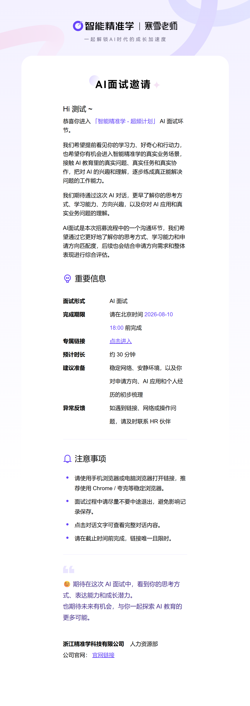
02｜视频面试邀约面试邀约
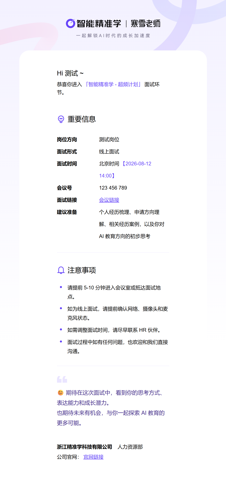
03｜线下面试邀约面试邀约
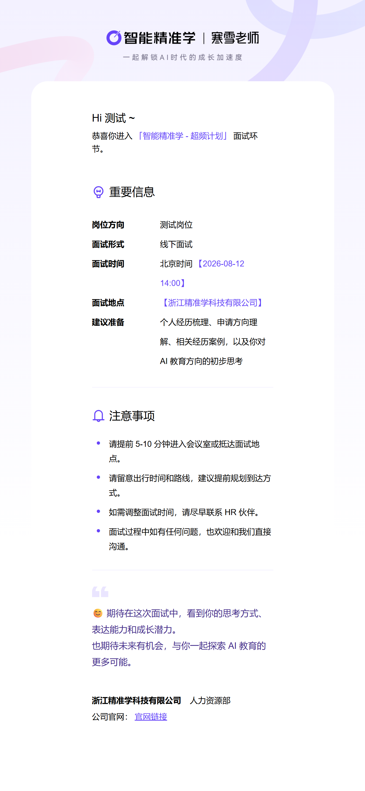
04｜流程中止反馈结果通知
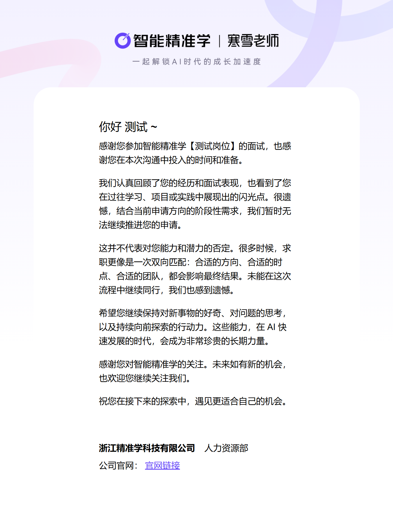
05｜进入人才库反馈结果通知
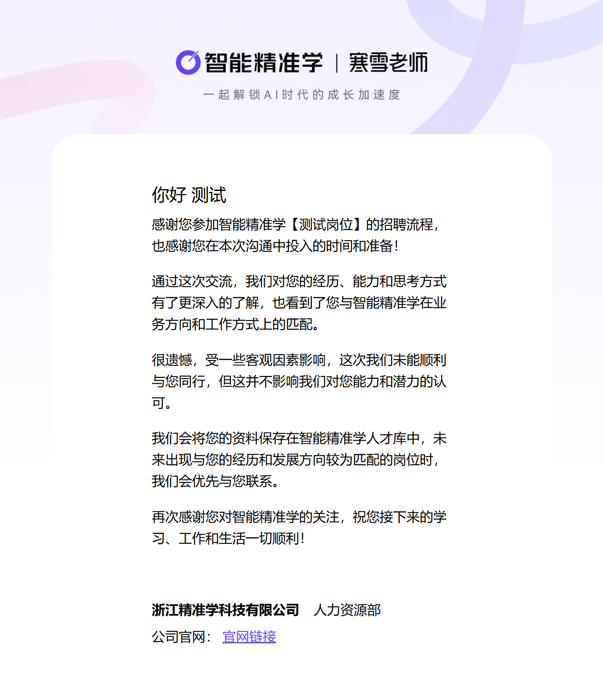
06｜指定岗位投递邀约人才回捞
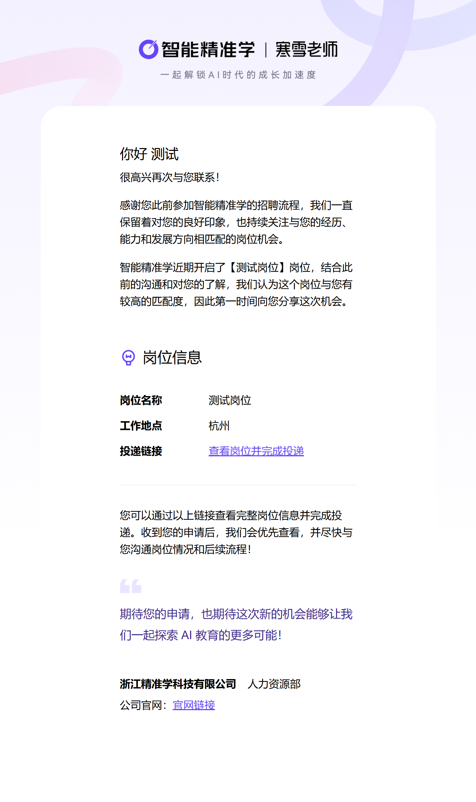
- 安排面试 → 发送邀约AI、视频或线下面试安排完成后，系统按对应模板向候选人发送关键信息。
- 形成招聘结果 → 发送结果反馈终止投递与进入人才库代表不同判断，必须选择与实际结果一致的模板场景。
- 人才回捞 → 发送指定岗位邀约候选人接受并重新投递后，离开人才库并进入候选人与投递流程；未接受时继续停留在人才库。
猎头账号
猎头账号用于控制外部猎头可以为哪些职位上传候选人。账号创建后必须完成职位授权并启用，猎头才能使用收到的账号密码进入外部入口开展指定职位的候选人提交。
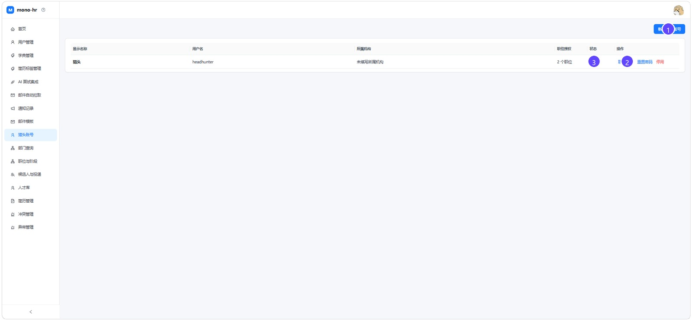
| 字段／按钮 | 分类 | 填写与操作规范 |
|---|---|---|
| 新建猎头账号 | 操作按钮 | 确定需要新增外部猎头协作账号后进入创建。 |
| 用户名 | 必须填写 | 作为猎头登录账号；创建前与对应猎头确认，避免与其他账号混淆。 |
| 显示名称 | 必须填写 | 填写能够识别该猎头的名称，便于内部人员核对账号归属。 |
| 所属机构 | 可以填写 | 页面标记为可选；有明确机构时填写，便于识别合作方。 |
| 初始密码 | 必须填写 | 页面要求12–128个字符；使用安全密码，不在截图、手册或公开群聊中展示。 |
| 职位授权 | 操作按钮 | 只选择该猎头实际负责的职位，授权后猎头才可为对应职位上传候选人。 |
| 状态 | 系统展示项 | 交付账号前确认显示为正常或已启用；未启用时猎头不能按本流程开始使用。 |
- 确认猎头姓名或机构，以及用于登录的用户名。
- 确认该猎头实际负责的招聘职位，避免扩大职位可见和候选人提交范围。
- 准备符合页面长度要求的初始密码。
- 确认账号密码采用一对一安全方式交付，不在公开群聊中发送。
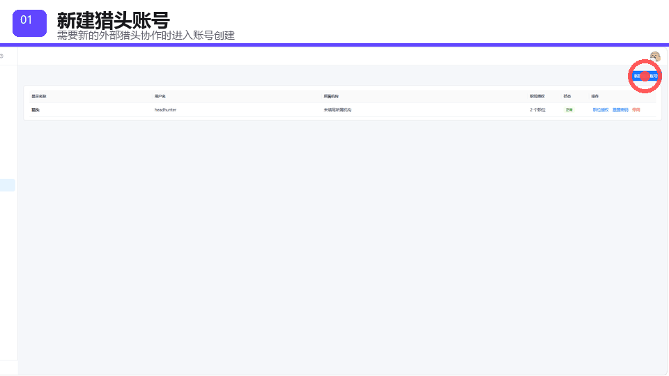
- 无账号 → 创建完成系统形成猎头登录账号，但仍需核对职位授权和启用状态。
- 未授权 → 已授权指定职位猎头的候选人提交范围被限制在所选职位。
- 未启用 → 已启用账号可以交付给对应猎头，用于指定职位的候选人上传。
职位与阶段
职位与阶段用于把招聘需求生成的职位草稿配置成可正式招聘的职位。HR需要确认招聘流程，按需配置简历评估与AI面试，完成BOSS职位名称映射和职位协作授权，最后发布职位。发布成功后，对应招聘需求同步进入“招聘中”。
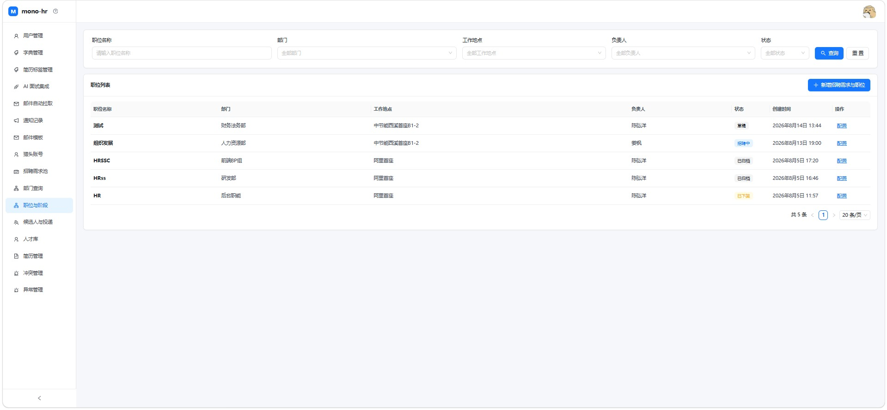
| 字段／按钮 | 分类 | 用途与判断规范 |
|---|---|---|
| 职位名称、部门、工作地点、负责人和状态 | 可以填写 | 用于缩小职位范围，只影响列表查询，不改变职位数据。 |
| 草稿／招聘中／已归档／已下架 | 系统展示项 | 用于判断职位当前能否编辑招聘阶段，以及是否正在接收新投递。 |
| 配置 | 操作按钮 | 进入当前职位的阶段、名称映射和协作授权页面。 |
- 从职位与阶段列表进入找到状态为“草稿”的目标职位，点击右侧“配置”。
- 从招聘需求池进入打开对应招聘需求详情，点击“查看职位与阶段”。该入口会直接进入本需求生成的职位草稿。
| 字段／按钮 | 分类 | 填写与操作规范 | 对后续流程的影响 |
|---|---|---|---|
| 简历评估官百炼应用ID | 可以填写 | 使用自动简历评估时，填写已发布的简历评估官百炼应用ID；岗位不使用该能力时可以不填。 | 填写并保存后，系统可以对进入该职位的简历生成评估结果。 |
| 简历筛选、Offer、待入职 | 系统展示项 | 三个固定阶段不能删除或修改；中间至少需要配置一个招聘阶段后才能发布职位。 | 构成每个职位都必须保留的流程骨架。 |
| 新增阶段 | 操作按钮 | 按实际招聘流程新增AI面试、作品／笔试（作品集筛选）或人工面试。 | 决定候选人在简历筛选和Offer之间依次经历的招聘环节。 |
| 阶段类型／阶段名称 | 必须填写 | 类型只能从三类中选择；名称可按业务场景拟定，但应让HR和业务负责人能够理解该阶段目的。 | 成为候选人投递详情中的阶段名称和操作入口。 |
| AI面试官百炼应用ID／AI面试评估百炼应用ID | 必须填写 | 仅AI面试阶段必须填写两个已发布应用的ID；系统显示“已就绪”后才算配置成功。应用创建方法见“AI面试集成”。 | 分别用于开展AI面试和生成面试评估；任一配置错误都会影响候选人完成AI面试。 |
| 拖动排序／编辑／删除 | 操作按钮 | 草稿状态下按真实招聘顺序调整中间阶段；发布前再次核对。招聘中的职位必须先下架，才能调整阶段。 | 顺序变化会改变候选人后续经历的招聘流程。 |
| 字段／按钮 | 分类 | 填写与操作规范 | 完成后的作用 |
|---|---|---|---|
| 添加当前职位名称 | 操作按钮 | 当BOSS职位名称与系统职位名称完全一致时，直接添加当前职位名称。 | 建立同名职位的自动匹配关系。 |
| 新增映射 | 操作按钮 | 当BOSS职位名称与系统名称不一致时，点击后填写BOSS邮件中实际出现的职位名称。 | 允许外部名称映射到当前系统职位。 |
| BOSS职位名称 | 必须填写 | 必须与BOSS直聘邮件中的职位名称保持一致；同一个名称只能映射到一个系统职位。 | 邮箱拉取简历时，系统据此判断简历应进入哪个职位。 |
| BOSS邮件标签与已绑定名称 | 系统展示项 | 新增后核对名称已出现在职位名称映射列表中。 | 表示当前名称已与系统职位绑定。 |
| 字段／按钮 | 分类 | 填写与操作规范 | 权限影响 |
|---|---|---|---|
| 职位协作人 | 可以填写 | 选择需要共同查看和处理该职位招聘数据的HR；按实际协作范围添加，避免无关授权。 | 未成为职位负责人、创建人或协作人的HR无法查看该职位及其候选人流程。 |
| 职位负责人／创建人 | 系统展示项 | 系统自动保留必要授权，负责人和创建人的授权不可移除。 | 保证职位始终有明确责任人和可追溯的创建人。 |
| 保存授权 | 操作按钮 | 核对人员范围后点击保存；人员变化时需要再次保存授权。 | 保存后协作人才取得或更新该职位的数据访问权限。 |
| 字段／按钮 | 分类 | 操作与判断规范 | 状态影响 |
|---|---|---|---|
| 发布职位 | 操作按钮 | 至少配置一个中间阶段；由职位负责人或HRBP在取得业务负责人确认并核对全部配置后发布。 | 职位从“草稿”进入“招聘中”，对应招聘需求同步进入“招聘中”并开始接收新投递。 |
| 职位状态 | 系统展示项 | 发布后核对页面顶部和职位列表均显示“招聘中”。 | 表示该职位已经正式启动招聘。 |
| 招聘阶段编辑状态 | 系统展示项 | 草稿状态可以新增、编辑、删除和排序；招聘中阶段配置锁定。 | 避免正在使用的候选人流程被直接改变。 |
| 暂停招聘／下架职位 | 操作按钮 | 需求状态维护由职位负责人或HRBP处理；确需调整已发布阶段时，根据系统当前页面提示先暂停招聘或下架职位。期间不再接收新投递或发起新Offer，已有候选人仍需继续处理。 | 职位停止接收新投递；需求与职位的实际状态以页面回显为准，重新核对配置后再恢复。 |
| 招聘需求状态 | 系统展示项 | 职位发布后返回招聘需求池，核对对应项目显示“招聘中”。 | 表示职位发布结果已经同步到招聘项目。 |
候选人与投递
候选人与投递是招聘主流程的操作中心。列表用于定位候选人，详情页左侧查看简历，右侧按照岗位阶段完成评价、面试和结果处理；每项操作只针对当前投递。
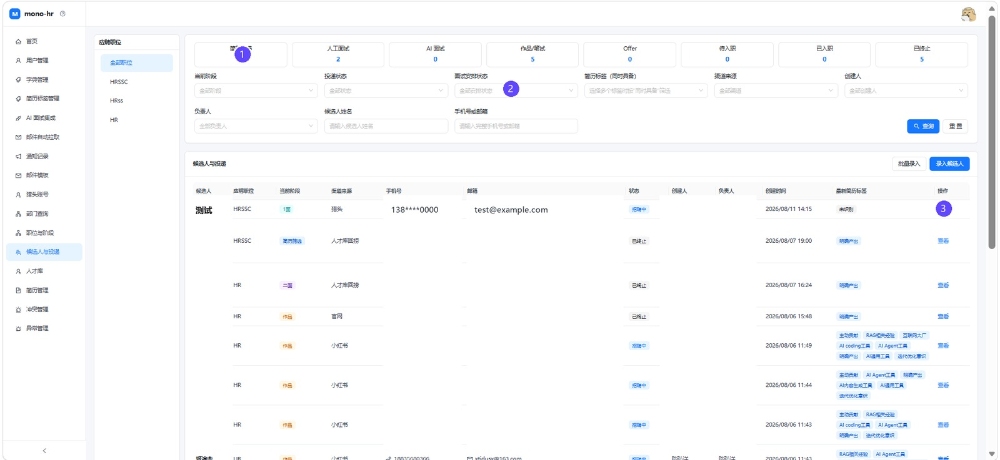
| 截图编号 | 关键内容 | 分类 | 使用规范 |
|---|---|---|---|
| ① | 职位与阶段入口 | 可以填写 | 按应聘职位和招聘阶段缩小范围。 |
| ② | 状态、负责人、姓名及联系方式筛选 | 可以填写 | 只影响列表查询，不改变候选人数据。 |
| ③ | 查看 | 操作按钮 | 进入当前候选人的投递详情。 |

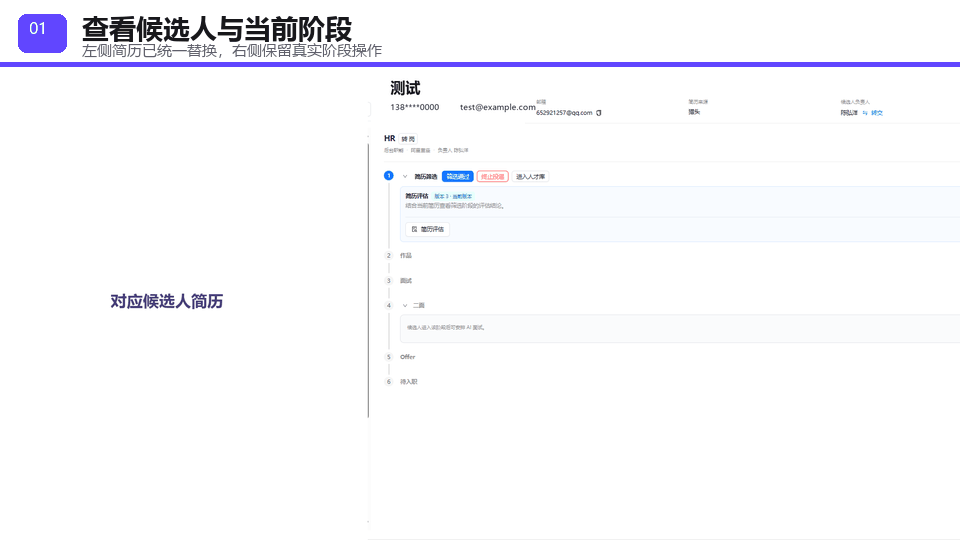

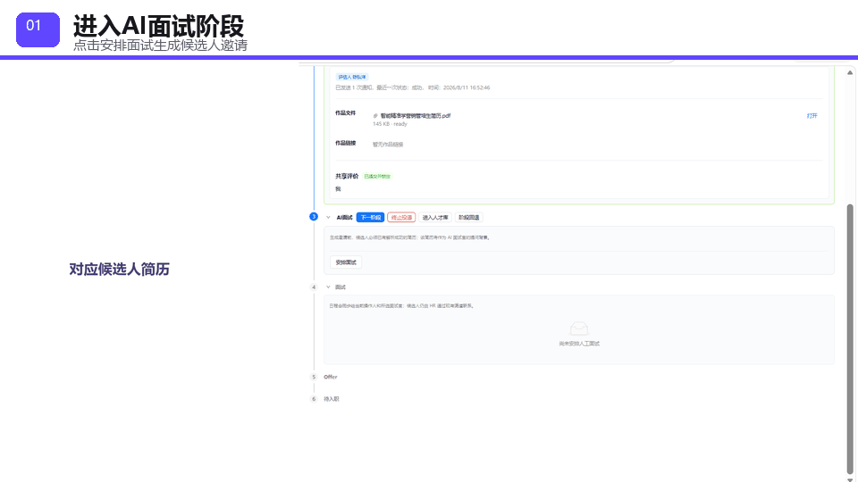
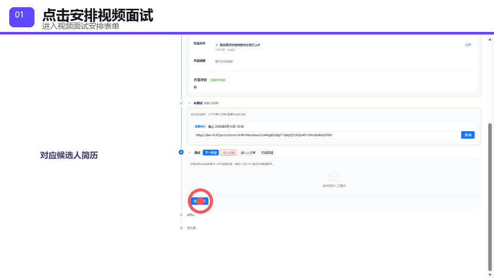
| 关键内容 | 分类 | 填写或核对规范 |
|---|---|---|
| 面试方式、面试官、日程标题、面试时间 | 必须填写 | 选择实际面试官并核对日期、开始和结束时间。 |
| 面试地点、会议室、日程描述、备注 | 可以填写 | 按实际安排填写；使用会议室时保存前确认可用。 |
| 已安排、会议号、会议链接和面试时间 | 系统展示项 | 保存后核对系统回显，并确认双方已收到通知。 |
| 写面评 | 操作按钮 | 面试结束后由对应面试官提交规范化面评。 |


| 字段／按钮 | 分类 | 用途与操作规范 |
|---|---|---|
| 标准原因 | 必须填写 | 选择与本次实际判断一致的终止原因，作为招聘结果记录和后续查询依据。 |
| 确认终止 | 操作按钮 | 确认后当前投递立即终止，系统将在5小时后自动发送终止反馈邮件。 |
| 已终止／终止原因 | 系统展示项 | 操作完成后核对页面状态和原因是否与实际处理一致。 |
| 恢复投递 | 操作按钮 | 用于撤销误操作，并取消五小时后的终止反馈邮件发送；只在确认终止有误时使用。 |

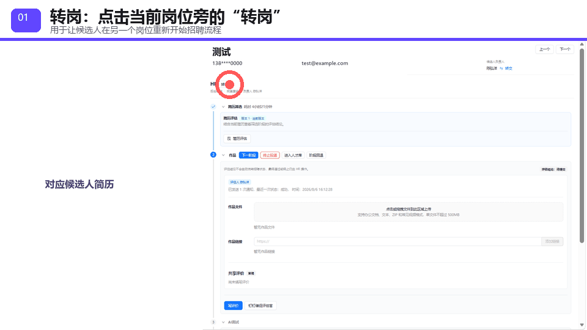
- 转岗不是修改当前岗位名称，而是终止原岗位投递并在目标岗位开始新的流程。
- 转岗前核对目标岗位，避免候选人进入错误的招聘流程。
- 转岗后候选人的可见权限遵循新岗位的协作人配置。
- 未被加入新岗位协作人的HR，无法继续查看该候选人在新岗位中的后续流程。
- 转移负责人不会为候选人创建新的岗位投递。
- 确认转交后，该候选人的后续流程、候选人沟通和最终结果由新负责人跟进。
- 转交前应与新负责人完成必要的信息交接，避免候选人无人跟进。
- 操作完成后核对页面显示的负责人是否已经更新。
- 接受Offer登记预计入职日期并进入待入职。
- 终止投递用于不再继续当前投递且没有后续保留计划的候选人，系统发送对应邮件。
- 进入人才库用于候选人优秀但当前HC或时机不支持录用、仍值得保留机会的情况，系统发送对应邮件。
- 候选人毁约或确认不再合作时，按实际情况终止当前投递。
- 公司HC已满但候选人仍值得后续联系时，进入人才库。
- 人才沉淀不是入职后的最后阶段，也不会在评价后自动发生。
- 任何结果操作前都要核对候选人、岗位和当前阶段。
- 简历筛选 → 作品评估（岗位可选）作品评价通过后进入下一阶段。
- 作品评估 → AI面试（岗位可选）安排后发送候选人邮件，完成评估后再推进。
- AI面试 → 视频面试保存安排后同步钉钉日程和候选人邮件，结束后提交面评。
- 任一招聘阶段 → 人才库确认入库后当前投递立即终止，候选人进入人才库，系统5小时后发送对应邮件。
- Offer → 待入职／人才库／终止投递根据候选人与HC实际情况选择结果。
人才库
人才库用于保留本次未入职、但仍有后续岗位匹配价值的候选人。日常操作重点是查询当前人才、选择目标岗位并发送邀约；进入人才库操作简单，本节重点说明人才回捞。
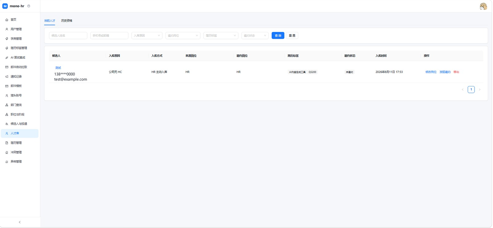
| 关键内容 | 分类 | 使用规范 |
|---|---|---|
| 候选人、联系方式、入库原因、邀约职位、标签和邀约状态 | 可以填写 | 用于缩小当前人才范围，只影响列表查询。 |
| 来源职位、入库方式、入库时间 | 系统展示项 | 帮助了解候选人的原始来源和人才沉淀背景。 |
| 发起邀约 | 操作按钮 | 针对指定岗位发送新的投递邀约。 |
| 待发送、待接受及页面实际回显状态 | 系统展示项 | 用于判断当前邀约进度；状态应以页面实时显示为准。 |
- 确认候选人仍适合本次邀约岗位，并核对原入库原因和已有标签。
- 确认需要邀请的目标岗位准确，避免向错误岗位发送邀约。
- 重复发送前先查看当前邀约状态；再次发起后，此前未提交的邀约链接会失效。
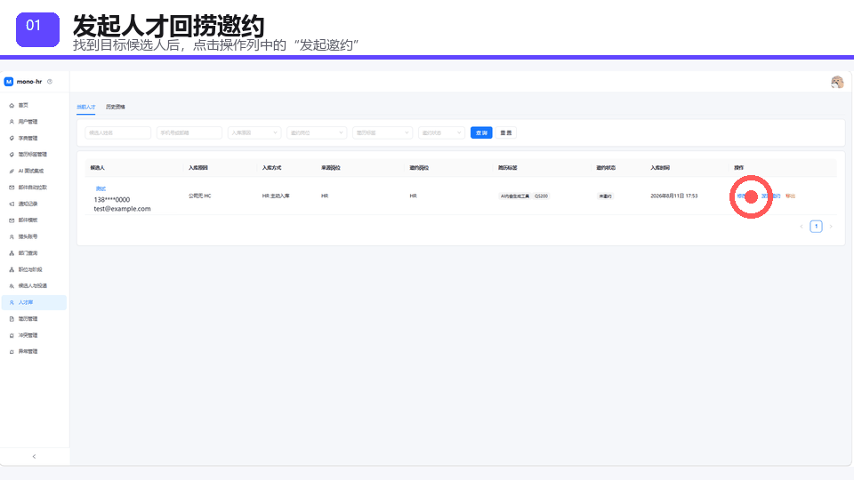
- 人才库 → 待接受发送邀约后等待候选人处理，候选人仍保留在人才库。
- 待接受 → 候选人与投递候选人接受并再次投递指定岗位后，进入候选人与投递阶段。
- 未接受 → 继续留在人才库候选人没有接受时不自动离开；需要再次联系时可重新发起邀约。
模块标题待确认
说明模块用途、适用角色、使用阶段和使用频率。